이야기로 행복을 전하는
- 전화 번호
- 0507-1360-9241
- 인스타그램
- @ddo.ddo_ssem
- 이메일주소
- yhjin928@gmail.com
세상의 아름다움과
행복을 전하는
독서지도사
김민선입니다
아이들이 앞으로 살아갈 때 필요한 지혜와 지식이 성장할 수 있도록 독서코칭을 해 드립니다.
이 시대를 살아가는 어른들에게는 이성과 감성을 아우르게 할 수 있는 매력적인 사람이 될 수 있도록 강의를 할 수 있습니다.
어르신들에게 감동을 선사 할 수 있는 실버동화구연 / 책놀이 수업이 가능합니다.
약력
- 이름
- 김민선 (1992.09.28)
연락처
- 전화 번호
- 0507-1360-9241
- 이메일주소
- yhjin928@gmail.com
- 인스타그램
- @ddo.ddo_ssem
학력 및 이력
- 2011
- 대전 유성여자고등학교 졸업
- 2015
- 한국침례신학대학교 신학과 학사
- 2015
- 오정제일식품 사무.경리부 대리
- 2016~
- 이레기업 통신판매 및 경리부 과장
- 2024
- 나진초등학교 순회 사서
- 2024
- 또랑또랑프렌즈 창의융합독서연구소 대표(현)
- 현재
- 슬하 1남2녀 자녀를 양육 중
자격증
- 2010
- 자동차운전면허자격증 2종보통
- 2014
- ITQ 엑셀자격증
- 2023
- 한국커피협회 바리스타 2급 자격증
- 2024
- 독서지도사자격증 1급(심화과정)
- 2024
- 손유희자격증 1급
- 2024
- 동화구연자격증 1급
독서 관련 연구
- 01독서지도 관련 보유 자격증
- 02연령별 창의융합형독서연구
독서지도 관련 보유 자격증
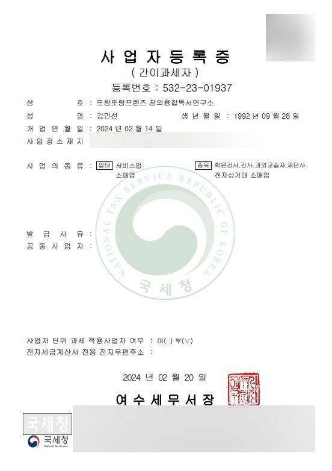
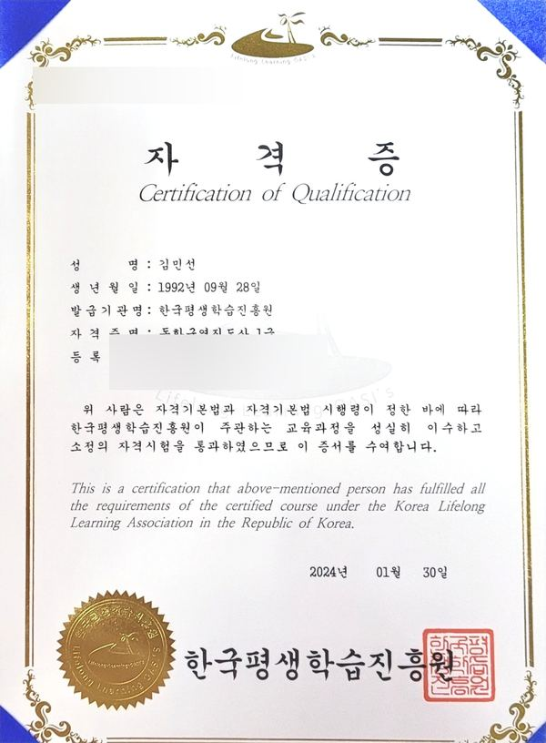
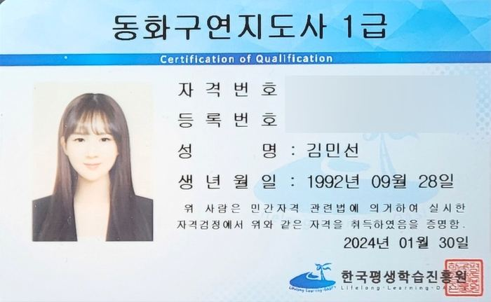
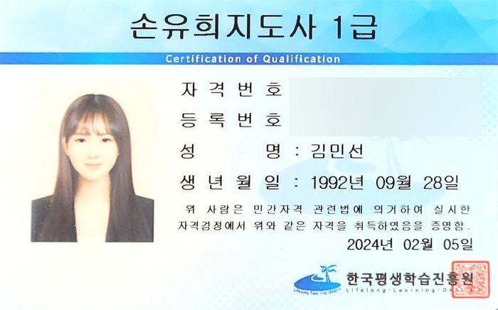
- 독서 지도사 1급(심화과정)
- 동화구연 지도사 1급
- 손유희 지도사 1급
- 사업자 등록증 보유
또랑또랑프렌즈 김민선 대표(겸 연구소장)는 교육부 허가 독서지도사 1급(심화과정),
동화구연지도사 1급, 손유희지도사 1급을 보유하고 있습니다.
독서 토론(디베이트), 논술지도, 독서코칭을 강의 및 수업 진행을 할 수 있습니다.
또랑또랑프렌즈 창의융합독서연구소는 국세청에 사업자 등록이 되어있습니다.
연령별 창의융합형독서연구
- 유아
- 성향에 맞춘 독서법 연구
- 성인
- 본인 취향 탐구 독서법 연구
- 실버
- 동화연계 두뇌자극훈련 인지법 연구
연구 방향성
연령별 핵심
- 유아
- 어른들의 취향과 성향이 모두 다르듯 아이들의 성향과 기질이 모두 다릅니다.
아이들의 성향에 맞춰 어떤 독서법이 아이에게 잘 맞는 방법인지, 앞으로 나아가 취학 후 읽기 독립을 어떻게 진행할 것인지에 대해서 연구합니다. - 성인
- 성인들 본인이 어떤 종류의 책을 좋아하는지 모르는 경우가 태반이며, 책이 왜 재미없다고 생각하는지는 본인의 독서 취향을 모르기 때문입니다. 본인의 취향을 잘 반영한 책이 무엇인지, 어떤 방법으로 책을 읽을 것인지에 대해서 연구합니다.
- 실버
- 노년에 이르게 되면 두뇌자극이 남은 생에 꼭 필요합니다.
인지가 뚜렷한 분들에게는 감동을, 그렇지 못한 분들에게는 자극을 줄 수 있는 동화 연계 인지법을 연구합니다.
개괄(요약)
인생의 답이 책에 있다고 단정 지을 수는 없습니다. 우리는 인생의 정답을 알 지 못합니다. 책은 한 부분일 뿐입니다.
그러나 아주 오래전부터 수많은 사람들이 그 답에라도 가까이 닿아 보려고 노력했던 것이 글로 남아있습니다. 어떤 책은 세상을 배우게 하고, 어떤 책은 내면을 일깨워주기도 합니다.
재미있는 책이 있는 반면 재미없는 책도 있습니다. 재미없었던 책도 어느 순간 재미있어지는 날이 오기도 합니다.
또랑또랑프렌즈는 우리 아이들이 앞으로 살아나아갈 때 멋진 사람으로 성장하기를 바랍니다.
우리 어른들이 다음 세대를 어떻게 이끌어 나아가야 할지 진지하게 고민하길 바랍니다.
우리 어르신들이 인생을 마무리하며 행복했다고 하시기를 바랍니다.
수업 및
강의 과정
- 01신체활동과 융합한 독서코칭
- 02손유희 및 동화구연
- 03자녀 양육을 위한 부모특강
신체활동과 융합한 독서코칭
한 뼘 더 성장 시킬수 있는 기회입니다.
무엇 하나 부족한 것 없이 사랑과 정성으로 키우고 싶은 우리 아이!
풍부한 감성과 바른 인성을 가지고 건강하고 멋지게 성장시키고 싶은 우리 아이!
마음껏 뛰어놀고 많은 경험을 하는 것이 정상적 발달에 정말 중요한 유아 시기!
흥미로운
이야기
표현하는
이야기
표현력
쑥쑥
발달
발달
발달
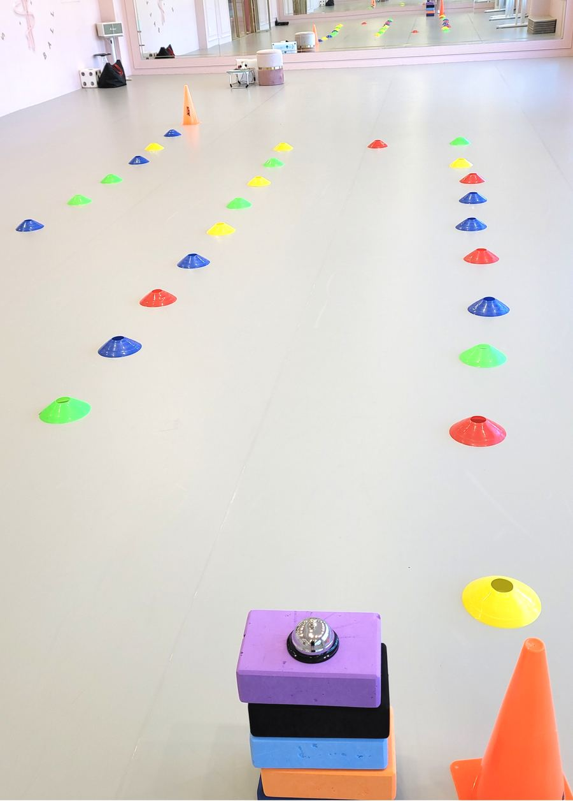
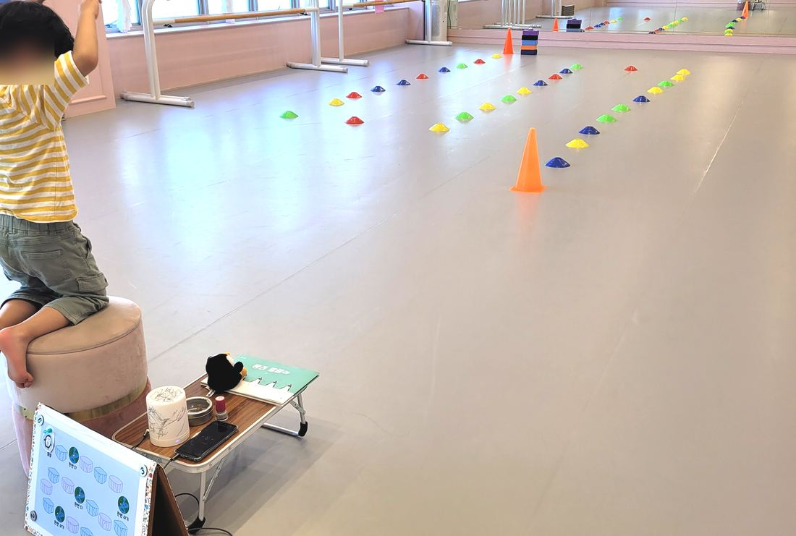
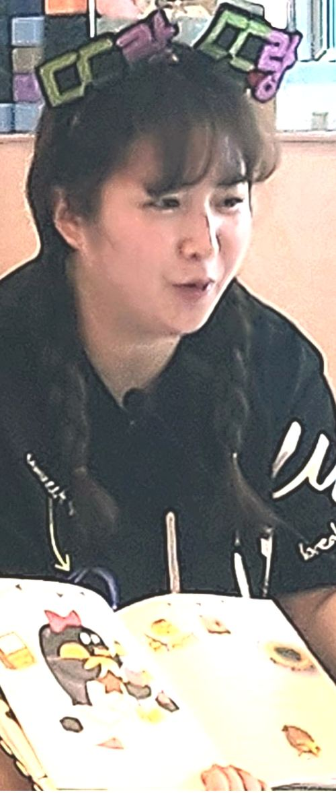
◀숙명무용학원에서 진행된 독서연계 신체놀이수업
독서연계 신체놀이수업을 원에서 진행할 경우 강당이 있어야 진행할 수 있습니다.
강당이 없을 경우 원에서는 진행하기 다소 어려울 수있으며,
수업 진행비는 초빙 관련 사항(해당페이지)을 참고해 주시길 바랍니다.
손유희 및 동화구연
손유희와 구연동화
손유희란 손을 움직여 감정, 사물, 여러 가지 자연 현상 등을 표현하는 것으로서, 유아들의 교육 활동 중 산만하거나 지루한 분위기를 주의집중, 흥미유발, 전이활동 방법으로 전환시키며, 사물을 이해시키고 여러 가지 개념 형성을 도와 인지 기능의 기초를 다질 수 있는 과정입니다.
동화구연이란 눈으로 보는 언어를 귀로 듣는 언어로 바꾸어 동화를 감상하는 것입니다.
구연이란 문서에 의하지 않고 입으로 사연을 말하는 것입니다.
동화를 읽어주는 것도 좋지만 구연하여 들려주면 더욱 효과적으로 나타나기 때문에 유익합니다.
손유희
목소리, 표정, 손짓을 활용하여 손유희에 적용되는 주제를 표현합니다. 주제는 가족, 숫자, 노래하는 손유희, 상황에 따른 손유희를 배웁니다.
진행자와 함께 손유희를 따라하면 기억력과 집중도를 높이는데 도움이 됩니다.
동화구연
먼저 진행자가 동화구연을 진행한 후 다시 한 번
함께 역할을 정하여 동화구연을 진행 합니다.
동화를 구연하면 감정선이 넓어지게 되며, 자신감과 자존감 형성에 도움이 됩니다.
자녀양육을 위한 부모특강
부모특강
우리 자녀를 키우기 위해서 어떤 것이 최선일지 매일, 매순간 고민하는 부모님들.
자녀의 독서지도는 어떤 방식으로 해야하는지 막막하신 분들.
우리 아이 기질, 특성에 맞는 독서지도 방법에 대해서 강의 해 드립니다.
재능 기부
- 01숙명무용학원 유아반 (2024)
- 02나진어린이집 유아반 (2024)
- 03김제 사랑뜰도서관 (2026)
숙명무용학원 유아반 (2024)
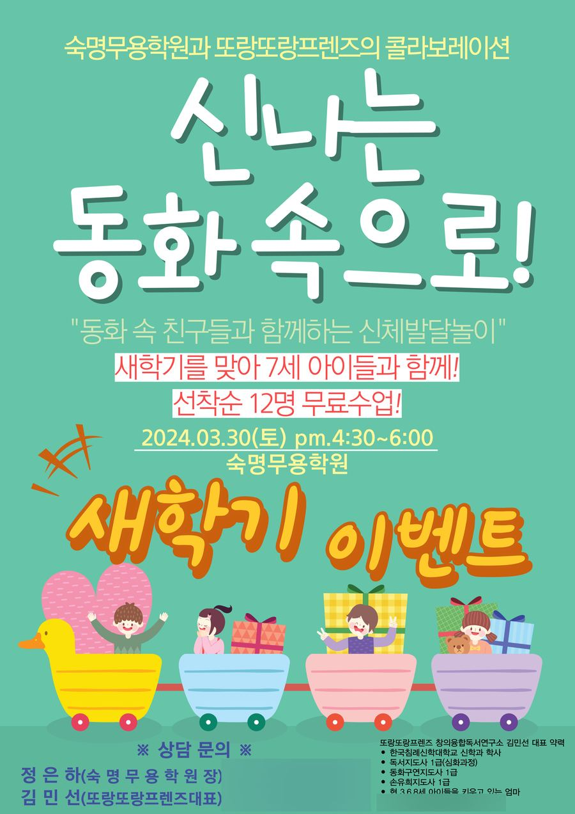
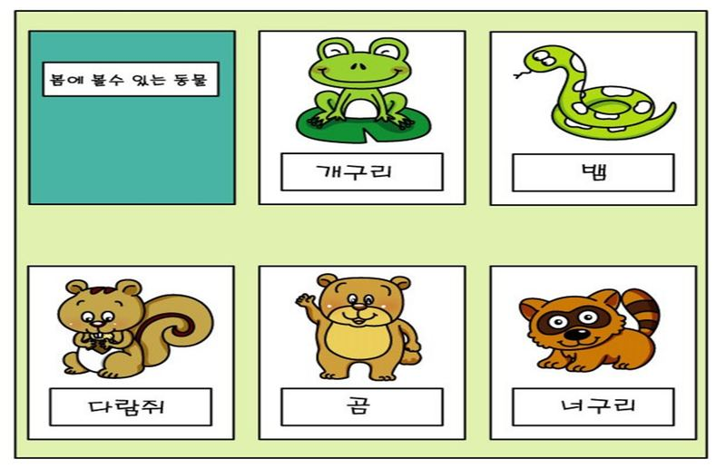
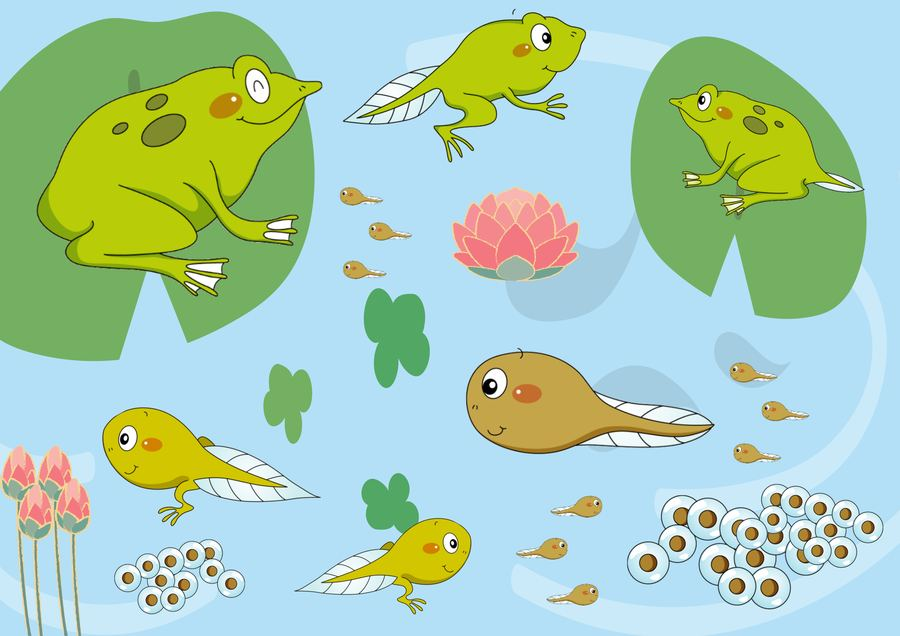
경칩, 개구리, 협동퍼즐
나진어린이집 유아반 (2024)
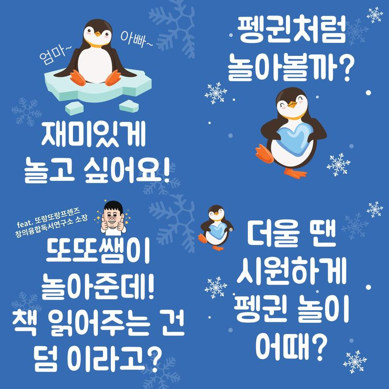
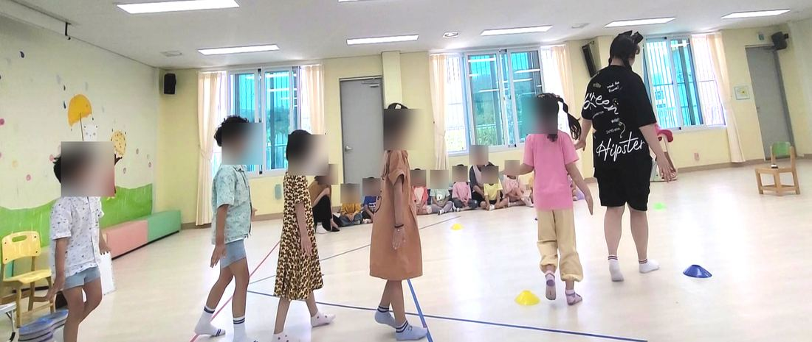
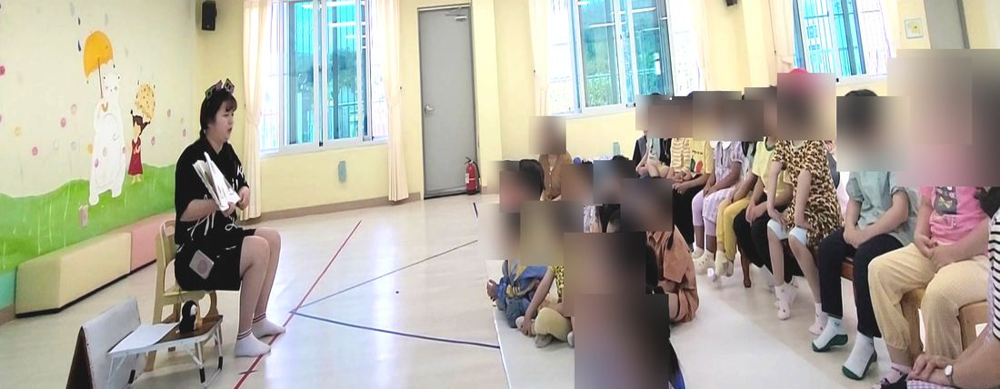
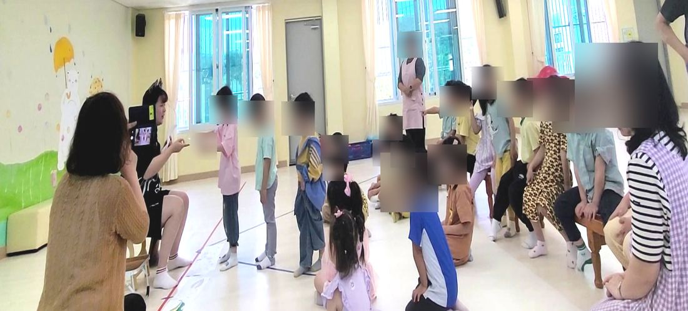
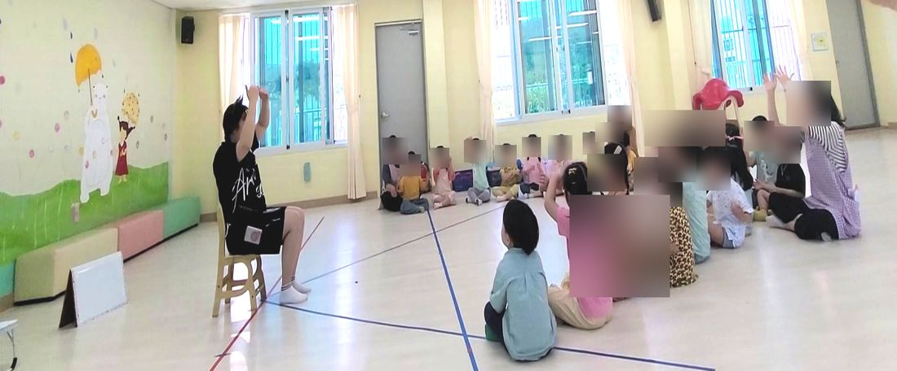
펭귄, 성장과정, 펭귄걸음 종치기게임
김제 사랑뜰 도서관 (2026)
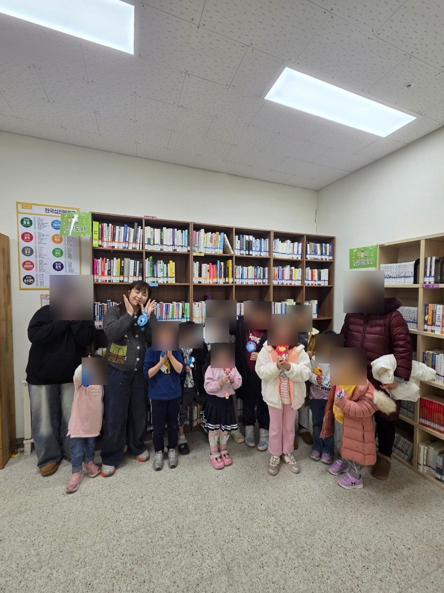
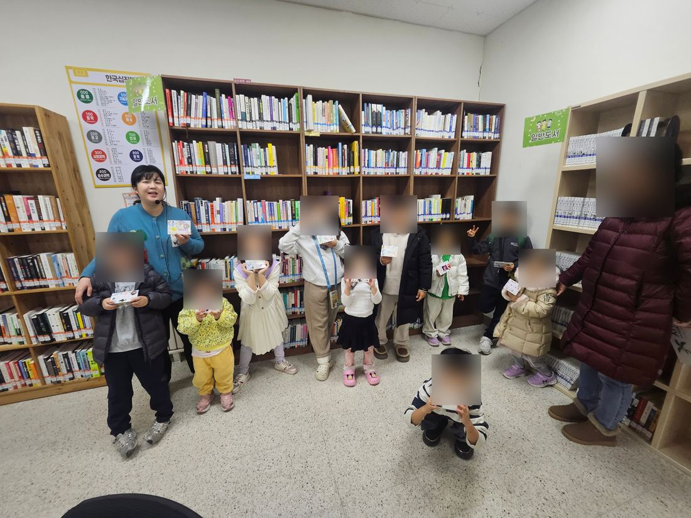
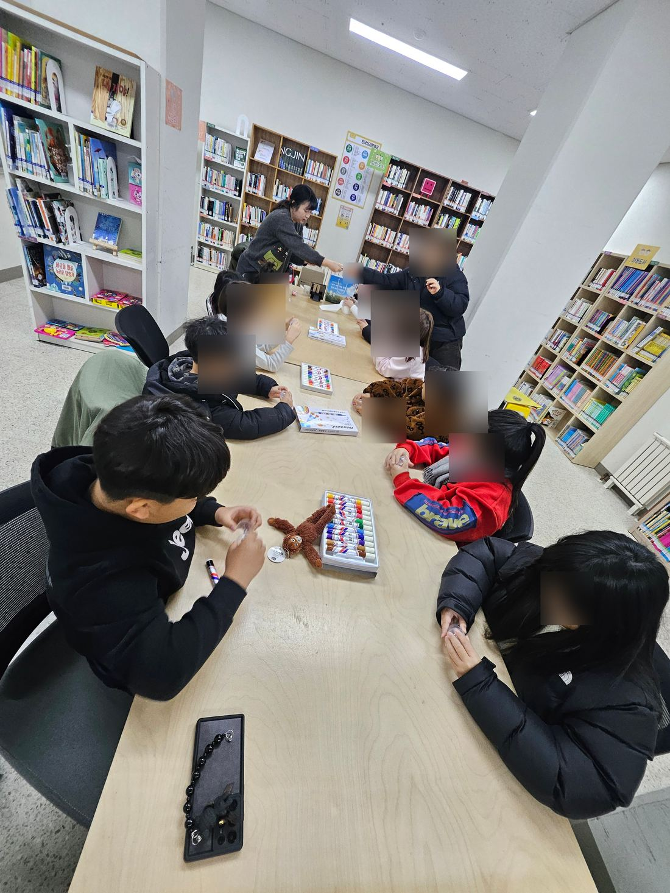
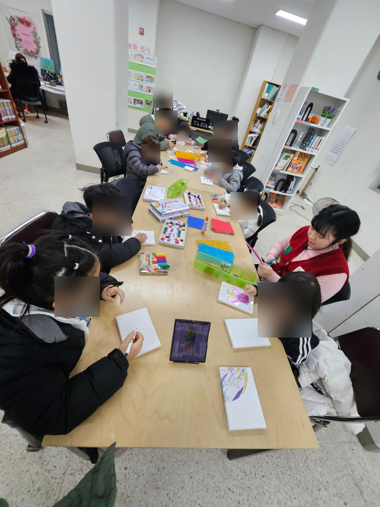
독서지도수업
초빙 관련 사항
- 01신체활동 프로그램 초빙
- 02동화구연 프로그램 초빙
- 03독서지도 부모특강 초빙
초빙 강사비 및 수업진행 사항
01 - 신체활동 프로그램 초빙
강사비는 계약서 내용에 따릅니다. 1회당 수업 참여 인원(선생님 미포함)에 따라 최소 5만원, 최대 15만원으로 합니다.
수업시간은 50분 내외로 진행됩니다. 해당 주제에 맞춰 동화책 1권, 연계 신체활동, 손유희로 진행됩니다.
신체활동 프로그램을 신청하기 원하시면 원 자체 강당이 있어야 합니다.
프로그램은 진행하고 싶으나 강당이 없을 경우, 강사와 협의하여 여수 웅천에 위치한 숙명무용학원과 연계하여 진행합니다.
02 - 동화구연 프로그램 초빙
강사비는 계약서 내용에 따릅니다. 1회당 수업 참여 인원(선생님 미포함)에 따라 최소 5만원, 최대 10만원으로 합니다.
수업시간은 50분 내외로 진행됩니다. 해당 주제에 맞춰 "강사의 동화구연, 손유희, 역할참여 동화구연"으로 진행 됩니다.
수업 진행은 각 반에서 이루어집니다.
03 - 독서지도 부모특강 초빙
강사비는 계약서 내용에 따릅니다. 1회당 강의 참여 인원(선생님 미포함)에 따라 최소 10만원부터 시작합니다.
강의 시간은 50분 내외로 진행됩니다. 50분 강의 중 강의 30분, 질의응답을 20분으로 합니다.
강의 주제는 "자녀 양육시 독서지도를 어떻게 할 것인가?" 또는 "미취학 시기 독서, 꼭 필요한가?" 중 1택 협의하여 정합니다.
강연 장소는 PPT를 띄울 수 있는 곳이 마련되어 있어야합니다.
* 김제시 외 타지역 초빙 시 지역에 따라 강사비가 추가됩니다. 강사비의 자세한 관련한 사항은 협의하에 결정합니다.